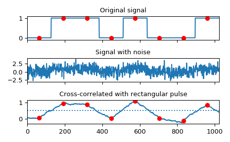

scipy.signal.correlate¶
-
scipy.signal.correlate(in1, in2, mode='full', method='auto')[source]¶ Cross-correlate two N-dimensional arrays.
Cross-correlate in1 and in2, with the output size determined by the mode argument.
- Parameters
- in1array_like
First input.
- in2array_like
Second input. Should have the same number of dimensions as in1.
- modestr {‘full’, ‘valid’, ‘same’}, optional
A string indicating the size of the output:
fullThe output is the full discrete linear cross-correlation of the inputs. (Default)
validThe output consists only of those elements that do not rely on the zero-padding. In ‘valid’ mode, either in1 or in2 must be at least as large as the other in every dimension.
sameThe output is the same size as in1, centered with respect to the ‘full’ output.
- methodstr {‘auto’, ‘direct’, ‘fft’}, optional
A string indicating which method to use to calculate the correlation.
directThe correlation is determined directly from sums, the definition of correlation.
fftThe Fast Fourier Transform is used to perform the correlation more quickly (only available for numerical arrays.)
autoAutomatically chooses direct or Fourier method based on an estimate of which is faster (default). See
convolveNotes for more detail.New in version 0.19.0.
- Returns
- correlatearray
An N-dimensional array containing a subset of the discrete linear cross-correlation of in1 with in2.
See also
choose_conv_methodcontains more documentation on method.
Notes
The correlation z of two d-dimensional arrays x and y is defined as:
z[...,k,...] = sum[..., i_l, ...] x[..., i_l,...] * conj(y[..., i_l - k,...])
This way, if x and y are 1-D arrays and
z = correlate(x, y, 'full')then\[z[k] = (x * y)(k - N + 1) = \sum_{l=0}^{||x||-1}x_l y_{l-k+N-1}^{*}\]for \(k = 0, 1, ..., ||x|| + ||y|| - 2\)
where \(||x||\) is the length of
x, \(N = \max(||x||,||y||)\), and \(y_m\) is 0 when m is outside the range of y.method='fft'only works for numerical arrays as it relies onfftconvolve. In certain cases (i.e., arrays of objects or when rounding integers can lose precision),method='direct'is always used.Examples
Implement a matched filter using cross-correlation, to recover a signal that has passed through a noisy channel.
>>> from scipy import signal >>> sig = np.repeat([0., 1., 1., 0., 1., 0., 0., 1.], 128) >>> sig_noise = sig + np.random.randn(len(sig)) >>> corr = signal.correlate(sig_noise, np.ones(128), mode='same') / 128
>>> import matplotlib.pyplot as plt >>> clock = np.arange(64, len(sig), 128) >>> fig, (ax_orig, ax_noise, ax_corr) = plt.subplots(3, 1, sharex=True) >>> ax_orig.plot(sig) >>> ax_orig.plot(clock, sig[clock], 'ro') >>> ax_orig.set_title('Original signal') >>> ax_noise.plot(sig_noise) >>> ax_noise.set_title('Signal with noise') >>> ax_corr.plot(corr) >>> ax_corr.plot(clock, corr[clock], 'ro') >>> ax_corr.axhline(0.5, ls=':') >>> ax_corr.set_title('Cross-correlated with rectangular pulse') >>> ax_orig.margins(0, 0.1) >>> fig.tight_layout() >>> fig.show()
